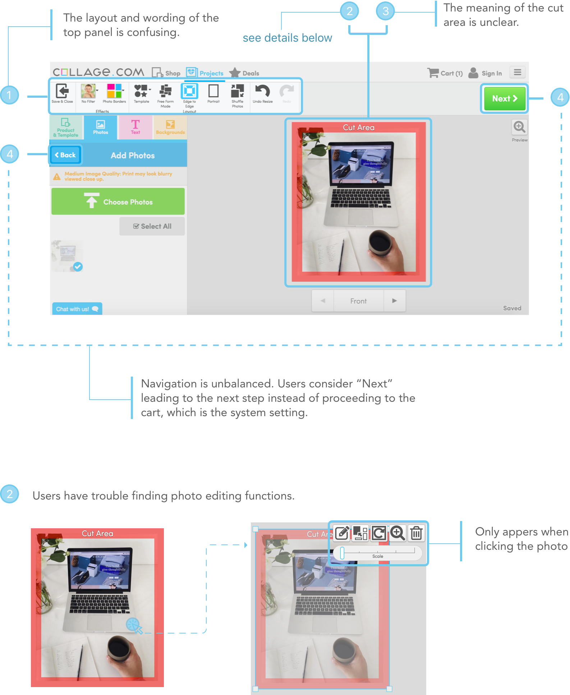
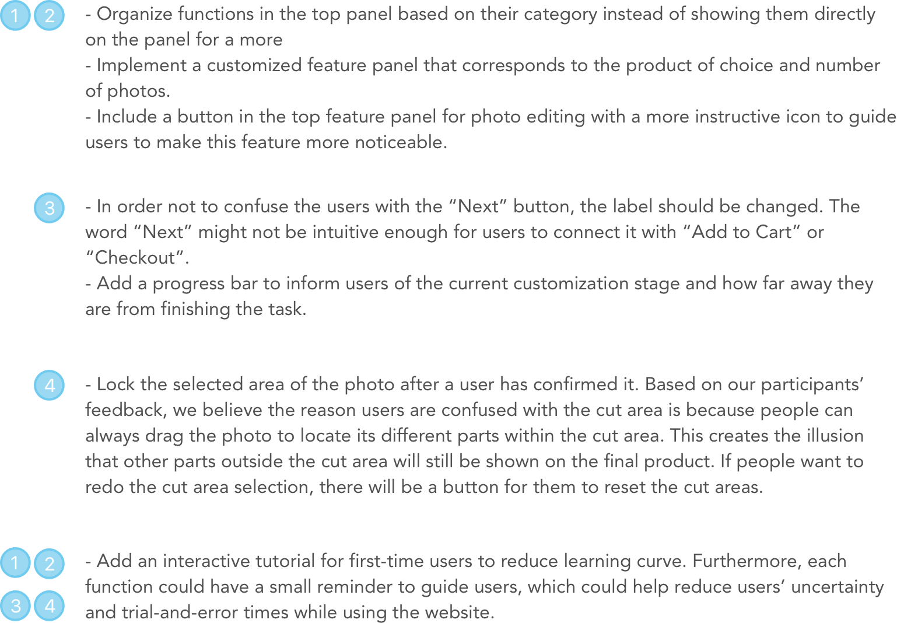

Usability Test for Collage.com
Collage.com is a website that allows users to create customized printed products using their own photos. It is a growing start-up company that takes pride in offering its users with a large variety of product options from blankets, cups, silverware to curtains. Because Collage.com was initially intended for creating products with multiple photos, but a significant number of users are using only one photo, the primary problem will be focusing on is how to improve the customer’s experience of creating a product using only one photo as opposed to the site’s standard multiple photo option.
As the client we are assigned for our usability test course, we as a team have conducted a comprehensive usability on it for three months and provided cooresponding suggestions and recommendation for improvement.

To review and analyze the usability of Collage.com, we followed the user-centered design methodology including qualitative researches and quantitative researches. At every phase of the project, we provided findings and recommendations based on our researches. The whole research process consists of six major parts.

By sythesizing all research results, we concluded major usability issues users faced that arose from the website’s information architecture, lack of system feedback, and wording. Among those, the ones appearing on the photo customizing page have the most negative influence.
Based on the usability issue reflected by the key findings above, we brought up following suggestions correspondingly to improve the user experience.
